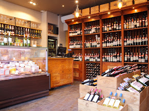

Warszawa · Ochota
La Vinothèque
Ochota
Kameralny wine bar i restauracja, gdzie starannie dobrane wina spotykają się z sezonową kuchnią. Miejsce na wieczór bez pośpiechu.

Nasza historia
Filozofia dobrego wieczoru
La Vinothèque Ochota powstała z miłości do wina i przekonania, że najlepsze chwile dzieje się przy dobrze zastawionym stole. Nasza karta win zmienia się z sezonem, a kuchnia czerpie z lokalnych, sprawdzonych dostawców.
Sommelier pomoże dobrać butelkę do dania, a kameralne wnętrze sprawi, że każda wizyta stanie się małym rytuałem — bez pośpiechu, w dobrym towarzystwie.
Umów wizytęGłos gości
Opinie
„Karta win robi wrażenie, a sommelier doradził butelkę idealną do dania. Wracamy przy każdej okazji.”
„Kameralne miejsce z klasą — idealne na kolację we dwoje. Obsługa na najwyższym poziomie.”
„Sezonowe menu zawsze zaskakuje. Ochota zyskała miejsce, do którego chce się wracać.”
Odwiedź nas
Kontakt
La Vinothèque Ochota
AdresHarfowa 11, 02-389 Warszawa
Telefon+48 000 000 000
E-mailkontakt@lavinotheque-ochota.pl
GodzinyWt–Nd: 16:00 – 23:00